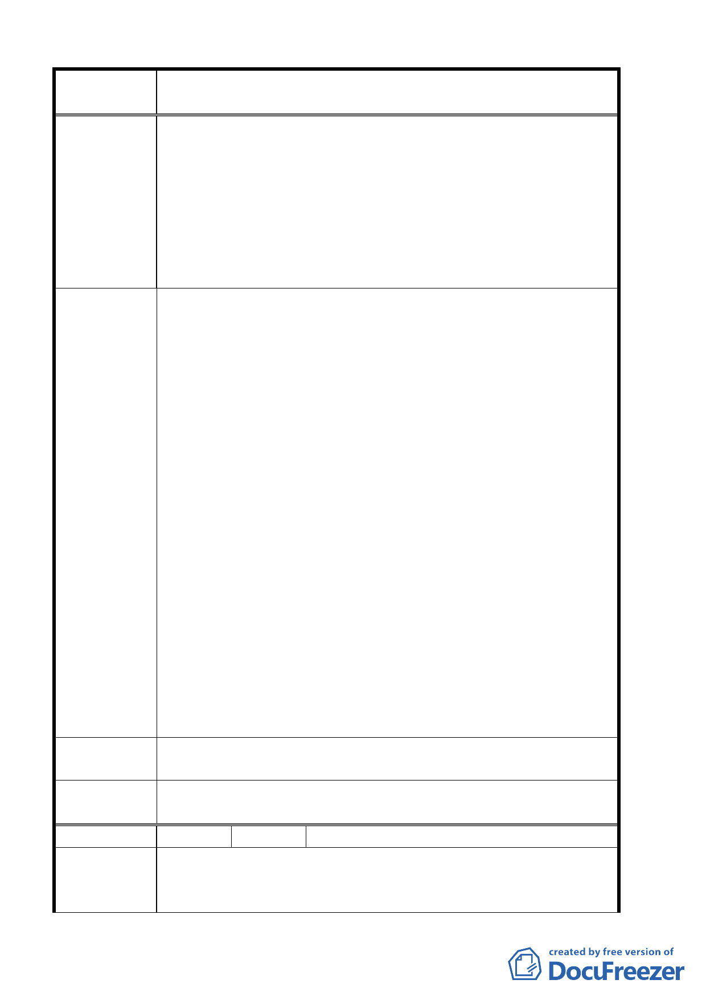

案 名 臺北市北投區都市計畫通盤檢討案（主要計畫）案
212、213、215、246、246-1、246-2、276、277 等十一筆土地
重測未分割前為頂北段山腳小段 91、92、92-1、217-2 等地號，
上揭土地為 62 年白宮山莊住宅社區整體開發案並於 66 年已整
體開發完成，原始申請為 54 棟別墅住宅，66 年請領了 49 棟使
用執照，另 5 棟未建築本山莊位於北投區復興三路 201 巷內面
臨 12 公尺計畫道路，距離復興高中僅二千餘公尺，具安國寺五
百公尺四周均有獨立環境圍繞現有住戶 40 餘戶、為一獨立完整
之封閉型社區。
1.上揭土地曾於 62 年領有陽明山管理局核發之建築執照，且為
66 年使用執照第 291、182、1370 號之基地，地號由於建築
管理單位變更陳情人，亦將所有土地分割岀 212、276 地號
二筆土地，提供社區作為法定空地以申照使用。
2.其中社區內五筆土地 215、246、246-1、246-2、277 地號，
當時已請領建築後未建築，乃陳情人保留土地作為日後自宅
建築用地其檔土牆及水保設施，於 66 年辦理全區使照時即已
完成。
3.數十年來課徵地價稅已五、六百萬元之鉅，已非陳請人所能
負擔，每年約 21 萬地價稅包含（210、211、213 等三筆道路
建 議 辦 法 用地及 209 地號）。
4.上揭土地亦曾於八十年申請建築線指示，然時至今日由於法
令變更，而受限於保護區法令之規定，荒廢多時，蔓草叢生，
蚊蟲滋生，對環境影響甚巨，且多年來繳交地價稅已數百萬
元，而卻未能申請住宅使用實不合理。
5.本社區既有居住事實已約三十年，水土保持工程完善，歷經
數十年來各種小風災仍安全無慮，且本山莊為獨立完整之封
閉型社區，變更住宅區並不影響週遭環境，懇請建議貴委員
會將第界已內之白宮山莊納入北投區都市計畫通盤檢討變更
為住宅區，以改善社區內住宅環境品質；陳情人願意配合貴
委員會審議原則辦理。
專 案小組 審 94.5.26 專案小組第 13 次審查會議：因不符合保護區變更為住
查 結 論 宅區之檢討原則，維持原計畫之保護區。
委員會議
決議
維持原都市計畫案。有關該項建議另案由市府以行政方式處理。
編 號 29 陳情人 簡木永、劉大君
依據台北市政府北市都二字第 8922048600 號書函，北投區崇仰
陳 情 理 由 三小段 400 等地號，與陽明大學界址疑義及註銷致遠三路 50
巷、52 巷、54 巷兩測土地為陽明大學用地案，今陽明大學也無
第 19 頁，共 49 頁